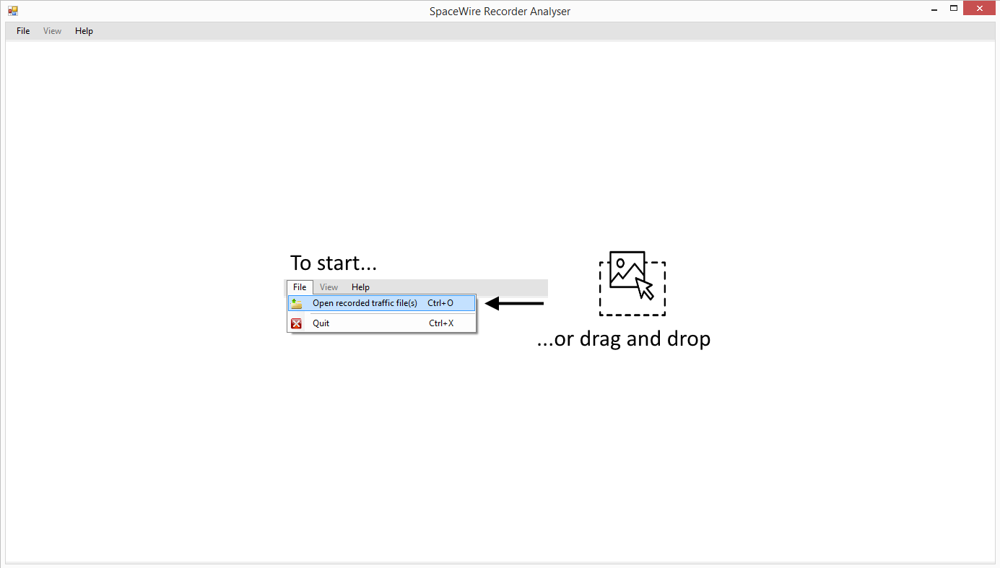
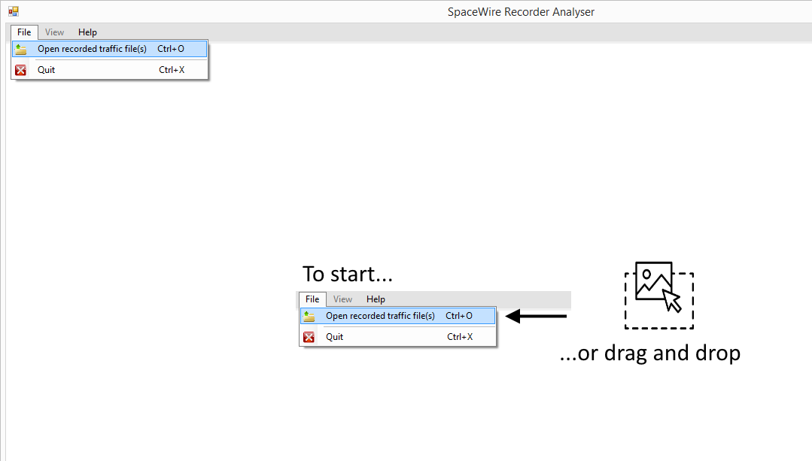
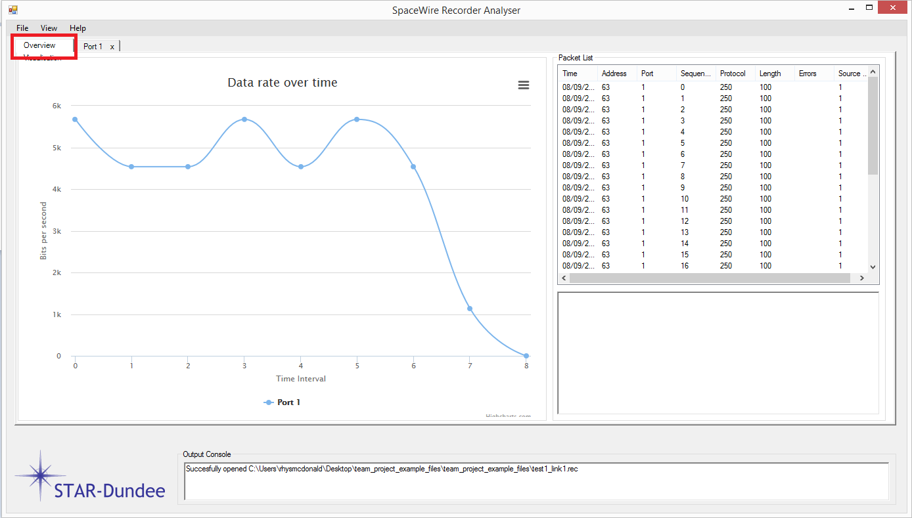
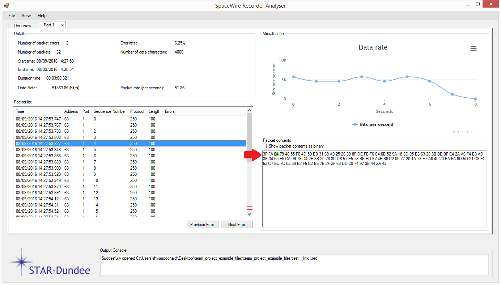
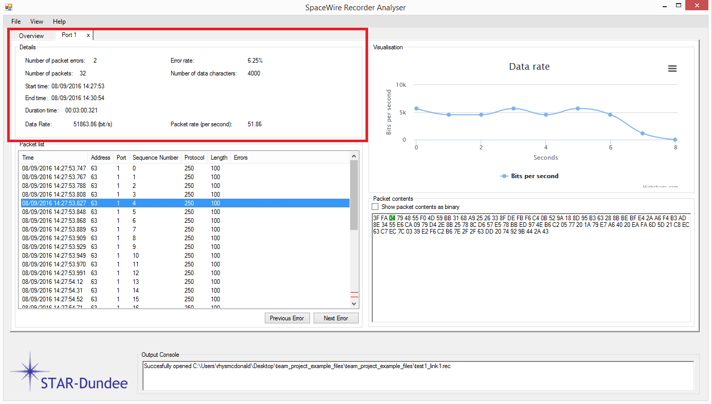
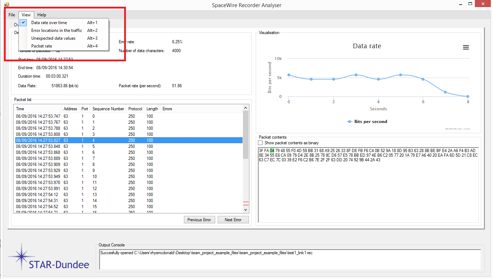
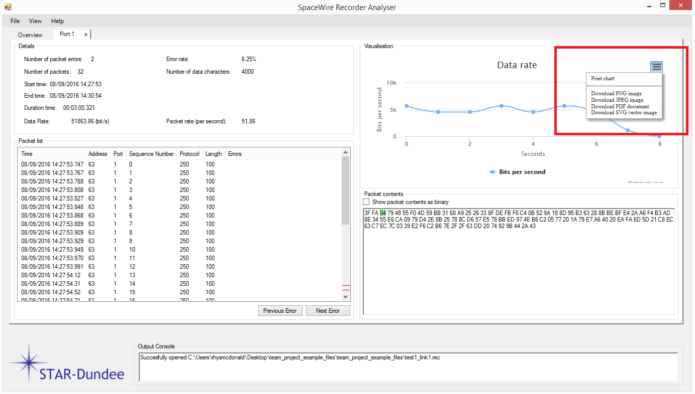
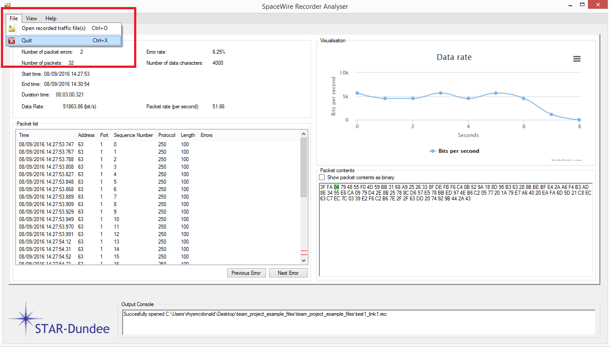

The STAR Recorder Data Analyser (STAR Gazer/Observer) is a tool which receives data files
from the Star Recorder and analyses the data to pinpoint and highlight errors within the data.
as a request to improve upon the tools STAR Dundee had developed themselves.
The software was developed as part of a university project for STAR Dundee
It was written mostly in C# with some JavaScript elements.
To get started with STAR Gazer, first you must download the folder to a directory on your computer. Once that it does, you must navigate to that folder and then follow the file path bin > Release and click the IndustrialProject.exe to start the software which will present you with a welcome screen (1.1).
1.1 - Welcome Page
To open a file in STAR Gazer, select File from the menu strip
at the top of the screen. From here, select the open option and
browse to your file location. Alternatively, use the Ctrl+O
shortcut key to quickly open the file browser.
You can also open an explorer window containing
your file(s) and drag them into the window.
To open more than one file, simple repeat the process above. (Note; Multiple files from the same recorder port cannot be added at the same time).
1.2 - Opening a file
To compare files in Star Gazer, open multiple files in the software and then select the tab labelled “Overview”. As files are added and removed, the overview page will adjust itself.
1.3 - Comparing files
To view an entire packet from a file, first load a file into the software. Once the file is loaded in, navigate to its tab (if not done so automatically) and select any packet from the packet list. When a packet is selected in this list, its full details and breakdown will be displayed within the packet contents box.
1.4 - Viewing Packet Details
To view the details on any given file, load a file into the software. Once the file is loaded, navigate to the files tab. An overview of statistics from the file will be displayed at the top under “Details”.
1.5 - Viewing Full File
To change which data is displayed visually after a file is loaded, navigate to the files tab. Once on the tab, click the View menu strip item and select the data you wish to see.
(Note; This can also be done on the overview tab. However if more than one file is loaded, the visuals will contain data from multiple files comparatively).
1.6 - Changing the Visualisation
To save a visualisation, load a file first and then select the data visual you wish to export. Once selected, click the Chart Context Menu which is to the top right of the visual. Once selected, choose your appropriate export from the drop down menu. Once an option is selected, browse to where you wish it to be saved and click save.
For printing a visual, follow the above steps but select print graph, then select your connected printer.
1.7 - Exporting Graphs
Click File on the menu strip and select Exit. Alternatively, use the shortcut key CTRL+X.
1.8 - Exiting the Program
When viewing packet details or the packet list, several characters or lines may be highlighted. These highlights indicate important information within the data for easy identification and are detailed below.
| Data Feature | Highlight Colour |
|---|---|
| Erroneous Packet (Packet List) | Red |
| Erroneous Packet (Packet Details) | Red |
| Packet Sequence Number | Green |
The software contains a few shortcut keys to allow you to browse and use the software quicker. Below is a table detailing each one and their use.
| Shortcut Key | Function |
|---|---|
Basic Functionality |
|
| Ctrl+X | Exit the Program |
| Ctrl+O | Open a new File |
Graph Navigation |
|
| Alt+1 | View Data Rate over time |
| Alt+2 | View Error Locations in the file |
| Alt+3 | View Unexpected Data within the file |
| Alt+4 | View Packet Rate |
Help Functions |
|
| F12 | Open the About Window |
| Alt+F12 | Open the User Manual |